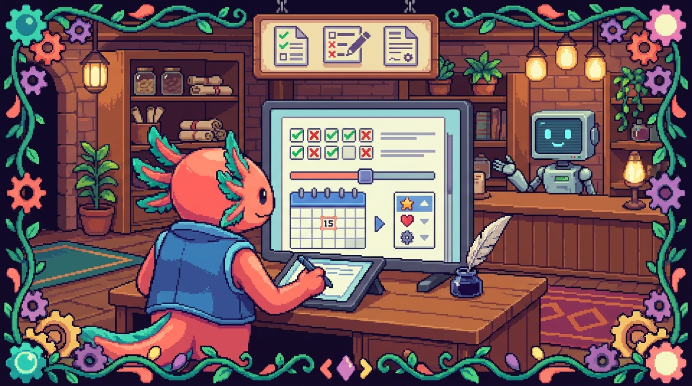

Capítulo 08 — Formularios avanzados

En el capítulo anterior aprendiste lo básico de los formularios: la etiqueta
<form>, las cajas de texto y el botón de enviar. Ahora vamos a abrir el cofre completo. HTML trae muchos tipos de campos listos para usar (calendarios, selectores de color, deslizadores, subida de archivos) y además sabe revisar lo que escribe la persona antes de enviar nada. En este capítulo construirás, paso a paso, un formulario de contacto completo para tu sitio tunal-digital. Bit, el ajolote pixel art, te acompaña: hoy viene con casco de obra porque vamos a construir cosas serias.
1. Repaso rápido: ¿qué es un formulario?
Un formulario es la parte de una página web donde la persona escribe o elige algo y luego lo envía. Pensar en un formulario es pensar en un cuestionario de papel: tiene casillas, líneas para escribir y un botón al final.
🟦 ¿Qué significa? — Formulario (
<form>)Es la etiqueta HTML que agrupa todos los campos que la persona va a rellenar y define qué pasa cuando se envían. Sirve para recoger datos: un nombre, un correo, un mensaje. ¿Dónde se usa en tu proyecto? En tunal-digital (
sitio-web/index.html), el formulario de contacto es la pieza que convierte a un visitante curioso en un mensaje que te llega a ti.
Un esqueleto mínimo se ve así:
<form action="/enviar" method="post">
<label for="nombre">Tu nombre</label>
<input type="text" id="nombre" name="nombre">
<button type="submit">Enviar</button>
</form>
🟦 ¿Qué significa? —
<input>Es la etiqueta más usada en formularios. Es una caja de entrada donde la persona escribe o elige. Lo mágico es que cambia completamente según su atributo
type: contype="text"es una línea para escribir, contype="date"es un calendario, contype="color"es un selector de colores. Una sola etiqueta, muchas formas.🟦 ¿Qué significa? — Atributo
typeUn atributo es información extra que le das a una etiqueta, escrita dentro de los
< >. El atributotypele dice al<input>qué clase de campo debe ser. Cambiartypecambia cómo se ve y cómo se comporta el campo.💡 Tip —
namees el nombre,ides la direcciónCasi todos los campos llevan dos atributos parecidos pero distintos:
namees la etiqueta del dato que viaja cuando envías el formulario (el servidor lo recibe comonombre=Edwar).ides un identificador único dentro de la página, que sirve sobre todo para conectar el campo con su<label>. Sinname, el dato no se envía. Sinid, el<label>no sabe a quién apunta.
2. Todos los tipos de input (uno por uno)
Vamos a recorrer los type más útiles. Para cada uno te muestro el código y para qué sirve. No tienes que memorizarlos: con tenerlos a mano y entender la idea, basta.
2.1 Texto, correo, contraseña (los que ya conoces)
<input type="text" name="nombre">
<input type="email" name="correo">
<input type="password" name="clave">
text es una línea de escritura normal. email es igual, pero el navegador revisa que lo escrito tenga forma de correo (con @). password oculta lo que se escribe con puntitos.
2.2 number — solo números
<label for="cantidad">¿Cuántas páginas web necesitas?</label>
<input type="number" id="cantidad" name="cantidad" min="1" max="10">
🟦 ¿Qué significa? —
type="number"Es un campo que solo acepta números. En el celular hace que aparezca el teclado numérico, y suele mostrar flechitas para subir o bajar el valor. Sirve para edades, cantidades, precios.
Los atributos min y max ponen un límite: en el ejemplo, no se puede pedir menos de 1 ni más de 10.
2.3 date — un calendario
<label for="fecha">¿Para cuándo lo necesitas?</label>
<input type="date" id="fecha" name="fecha">
🟦 ¿Qué significa? —
type="date"Convierte el campo en un selector de fecha: al hacer clic aparece un calendario y la persona elige el día. Así nadie escribe fechas raras como "el martes que viene". Sirve para reservas, plazos, cumpleaños.
2.4 range — un deslizador
<label for="presupuesto">Presupuesto aproximado</label>
<input type="range" id="presupuesto" name="presupuesto" min="0" max="2000" step="100">
🟦 ¿Qué significa? —
type="range"Es una barra deslizante (como el control de volumen). La persona arrastra un botón de un lado a otro para elegir un valor entre un mínimo y un máximo. Sirve cuando el número exacto no importa tanto como la sensación de "más o menos por aquí".
🟦 ¿Qué significa? — Atributo
stepDefine de cuánto en cuánto salta el valor. Con
step="100", el deslizador se mueve de 100 en 100 (0, 100, 200…). Sinstep, salta de uno en uno.
2.5 color — elegir un color
<label for="color">Color favorito de tu marca</label>
<input type="color" id="color" name="color">
🟦 ¿Qué significa? —
type="color"Muestra un selector de color nativo del sistema. La persona elige un color y el formulario guarda su código (algo como
#1d4ed8). Te puede servir, por ejemplo, para que un cliente de tunal-digital te diga el color que imagina para su sitio.
2.6 file — subir un archivo
<label for="logo">Sube tu logo (opcional)</label>
<input type="file" id="logo" name="logo" accept="image/*">
🟦 ¿Qué significa? —
type="file"Crea un botón de "elegir archivo". Al pulsarlo, se abre el explorador del dispositivo para que la persona seleccione un archivo (una imagen, un PDF). Sirve para que alguien adjunte su logo, una foto o un documento.
🟦 ¿Qué significa? — Atributo
acceptLe dice al campo qué tipos de archivo aceptar.
accept="image/*"significa "cualquier imagen". Así evitas que alguien intente subir un video de 2 GB sin querer.
2.7 search, url y tel
<input type="search" name="buscar" placeholder="Buscar...">
<input type="url" name="sitio" placeholder="https://ejemplo.com">
<input type="tel" name="telefono" placeholder="+1 202 555 0199">
searchse ve casi comotext, pero algunos navegadores le añaden una "x" para borrar rápido. Está pensado para cajas de búsqueda.urlrevisa que lo escrito tenga forma de dirección web (conhttp://ohttps://).telno revisa el formato (los teléfonos varían mucho por país), pero en el celular muestra el teclado de marcación, con números grandes.
🟦 ¿Qué significa? —
placeholderEs el texto gris de ejemplo que aparece dentro de un campo vacío y desaparece cuando empiezas a escribir. Sirve de pista ("escribe aquí tu correo"). Ojo: no reemplaza al
<label>, porque desaparece al escribir y la gente puede perderse.⚠️ Cuidado — El navegador valida, pero no es tu guardia de seguridad
Que el navegador revise un correo o una URL es comodidad para la persona, no protección de verdad. Alguien con malas intenciones puede saltarse todo eso. La validación seria siempre se hace en el servidor. En tunal-digital, eso ocurre en el Cloudflare Worker que recibe el mensaje, no en el HTML.
3. Listas de opciones: select, option y optgroup
Cuando quieres que la persona elija de una lista cerrada (en vez de escribir libremente), usas un menú desplegable.
<label for="servicio">¿Qué servicio te interesa?</label>
<select id="servicio" name="servicio">
<option value="">— Elige una opción —</option>
<option value="landing">Página de aterrizaje</option>
<option value="tienda">Tienda en línea</option>
<option value="rediseno">Rediseño de mi web actual</option>
</select>
🟦 ¿Qué significa? —
<select>y<option>
<select>es el menú desplegable (la cajita que se abre al pulsarla). Dentro van varias<option>, que son cada una de las opciones que la persona puede elegir. El atributovaluede cada<option>es el dato que se envía; el texto entre las etiquetas es lo que la persona ve.
Cuando hay muchas opciones, puedes agruparlas para que se lean mejor:
<select id="servicio" name="servicio">
<optgroup label="Sitios web">
<option value="landing">Página de aterrizaje</option>
<option value="tienda">Tienda en línea</option>
</optgroup>
<optgroup label="Mantenimiento">
<option value="rediseno">Rediseño</option>
<option value="soporte">Soporte mensual</option>
</optgroup>
</select>
🟦 ¿Qué significa? —
<optgroup>Es una cabecera de grupo dentro de un
<select>. Pone un título (con el atributolabel) sobre un conjunto de opciones, como las secciones de un menú de restaurante. No se puede elegir; solo organiza. Sirve cuando tienes muchas opciones y quieres ordenarlas por categorías.💡 Tip — La primera opción como instrucción
Es buena costumbre poner una primera
<option>convalue=""y un texto como "— Elige una opción —". Así el desplegable arranca sin nada elegido y la persona entiende que tiene que decidir. Combinado conrequired(lo verás abajo), obliga a elegir algo de verdad.
4. datalist: sugerencias mientras escribes
A veces quieres lo mejor de dos mundos: que la persona escriba libremente, pero ofreciéndole sugerencias. Eso es datalist.
<label for="ciudad">¿Desde qué ciudad nos escribes?</label>
<input type="text" id="ciudad" name="ciudad" list="ciudades">
<datalist id="ciudades">
<option value="Bogotá"></option>
<option value="Medellín"></option>
<option value="Washington D. C."></option>
</datalist>
🟦 ¿Qué significa? —
<datalist>Es una lista de sugerencias que se asocia a un
<input>de texto. Mientras la persona escribe, el navegador le ofrece opciones que coinciden, pero también puede escribir algo que no esté en la lista. La conexión se hace con el atributolistdel input, que debe coincidir con eliddel<datalist>.
La diferencia con <select>: el select te obliga a elegir de la lista; el datalist solo sugiere y deja escribir libremente.
5. Organizar el formulario: fieldset y legend
Cuando un formulario crece, conviene agrupar campos relacionados con una caja y un título.
<fieldset>
<legend>Tus datos de contacto</legend>
<label for="nombre">Nombre</label>
<input type="text" id="nombre" name="nombre">
<label for="correo">Correo</label>
<input type="email" id="correo" name="correo">
</fieldset>
🟦 ¿Qué significa? —
<fieldset>y<legend>
<fieldset>dibuja un recuadro que agrupa varios campos relacionados.<legend>es el título de ese recuadro, que aparece encajado en el borde superior. Sirven para ordenar formularios largos en bloques con sentido ("Datos de contacto", "Detalles del proyecto") y, además, ayudan a las personas que usan lectores de pantalla a entender la estructura.🔎 En tu código
En tunal-digital podrías partir tu formulario de contacto en dos
fieldset: uno para "Quién eres" (nombre, correo, teléfono) y otro para "Qué necesitas" (servicio, presupuesto, mensaje). Visualmente queda más respirado y la persona se pierde menos.
6. Validación: pedir que los datos vengan bien
La gran ventaja de los formularios modernos es que el navegador puede revisar lo que se escribió antes de enviar y avisar si falta algo o está mal. A esto se le llama validación.
🟦 ¿Qué significa? — Validación
Es comprobar que los datos cumplen unas reglas antes de aceptarlos. Por ejemplo: que el correo tenga
@, que el mensaje no esté vacío, que el teléfono tenga al menos 7 dígitos. HTML trae varias reglas listas para usar como atributos.
6.1 required — obligatorio
<input type="email" name="correo" required>
🟦 ¿Qué significa? —
requiredMarca un campo como obligatorio. Si la persona intenta enviar el formulario dejándolo vacío, el navegador lo impide y muestra un aviso. Sirve para los datos sin los cuales el formulario no tiene sentido (un mensaje de contacto sin correo no sirve de mucho).
6.2 minlength y maxlength — longitud del texto
<textarea name="mensaje" minlength="10" maxlength="500" required></textarea>
🟦 ¿Qué significa? —
minlengthymaxlengthControlan cuántos caracteres puede tener un campo de texto.
minlength="10"pide al menos 10 caracteres (para evitar mensajes de una sola palabra).maxlength="500"impide pasar de 500. Sirven para que los mensajes no sean ni demasiado cortos ni infinitos.
6.3 min y max — rango de números o fechas
Ya los viste con number y range. También funcionan con date:
<input type="date" name="fecha" min="2026-07-01">
Así no se puede elegir una fecha anterior al 1 de julio de 2026.
6.4 pattern — un molde exacto
<label for="codigo">Código postal (5 dígitos)</label>
<input type="text" id="codigo" name="codigo" pattern="[0-9]{5}">
🟦 ¿Qué significa? —
patternDefine un molde que el texto debe cumplir, escrito con un lenguaje llamado "expresión regular". En el ejemplo,
[0-9]{5}significa "exactamente 5 caracteres, y todos números del 0 al 9". Si no encaja, el navegador no deja enviar. Sirve para formatos estrictos: códigos postales, identificadores, etc.💡 Tip — Acompaña siempre
patterncon untitleLas expresiones regulares no las entiende nadie a simple vista. Añade un atributo
titleexplicando la regla en palabras:title="Escribe 5 números". El navegador lo mostrará si la persona se equivoca, y se lo agradecerá.⚠️ Cuidado — No abuses de la validación estricta
Es tentador exigir formatos perfectos, pero recuerda que tus visitantes escriben desde el celular, con prisa. Un teléfono con espacios o un correo con mayúsculas deberían poder pasar. Valida lo justo: obligatorio sí, pero no pongas un
patterntan rígido que ahuyente a un cliente real.
7. autocomplete: que el navegador eche una mano
<input type="text" name="nombre" autocomplete="name">
<input type="email" name="correo" autocomplete="email">
<input type="tel" name="telefono" autocomplete="tel">
🟦 ¿Qué significa? —
autocompleteLe dice al navegador qué dato representa el campo, para que pueda ofrecer rellenarlo automáticamente con información que la persona ya guardó (su nombre, su correo, su dirección). Con
autocomplete="email", al tocar el campo aparece su correo como sugerencia. Sirve para que rellenar el formulario sea más rápido y cómodo.
Valores comunes: name, email, tel, street-address, postal-code, organization. También existe autocomplete="off" para apagarlo en campos donde no quieres sugerencias.
8. Accesibilidad: que cualquier persona pueda usarlo
🟦 ¿Qué significa? — Accesibilidad
Es diseñar para que todas las personas puedan usar tu sitio, incluidas quienes navegan con el teclado, con lectores de pantalla (programas que leen la página en voz alta) o con baja visión. No es un extra: es parte de hacer las cosas bien.
Tres reglas de oro para formularios accesibles:
- Cada campo con su
<label>. Y conectado conforeid.
<label for="correo">Tu correo</label>
<input type="email" id="correo" name="correo">
🟦 ¿Qué significa? —
<label>Es la etiqueta de texto que dice qué se escribe en un campo. El atributo
fordel label debe coincidir con eliddel input. Así, al tocar el texto, el cursor salta al campo, y los lectores de pantalla anuncian "Tu correo, campo de texto". Sirve para que nadie tenga dudas de qué va en cada caja.
-
No uses solo el color para avisar de errores. Si un campo está mal, acompáñalo de texto, no solo de un borde rojo (hay personas que no distinguen el rojo).
-
Orden lógico. Los campos deben seguir un orden natural de arriba abajo, para que se puedan recorrer con la tecla Tab sin saltos raros.
💡 Tip — Bit dice: prueba sin ratón
Bit te reta a algo: abre tu formulario y recórrelo solo con el teclado, usando Tab para avanzar y Enter para enviar. Si puedes completarlo entero sin tocar el ratón, vas muy bien. Si te trabas, ahí tienes algo que mejorar.
9. El formulario de contacto de tunal-digital (todo junto)
Ahora juntamos todo lo aprendido en un formulario real para tu sitio. Este código iría dentro del <body> de sitio-web/index.html.
<form action="/api/contacto" method="post" autocomplete="on">
<fieldset>
<legend>Cuéntanos quién eres</legend>
<label for="nombre">Nombre</label>
<input type="text" id="nombre" name="nombre"
autocomplete="name" required minlength="2">
<label for="correo">Correo electrónico</label>
<input type="email" id="correo" name="correo"
autocomplete="email" required
placeholder="tucorreo@ejemplo.com">
<label for="telefono">Teléfono (opcional)</label>
<input type="tel" id="telefono" name="telefono"
autocomplete="tel" placeholder="+1 202 555 0199">
</fieldset>
<fieldset>
<legend>Cuéntanos qué necesitas</legend>
<label for="servicio">Servicio que te interesa</label>
<select id="servicio" name="servicio" required>
<option value="">— Elige una opción —</option>
<optgroup label="Sitios web">
<option value="landing">Página de aterrizaje</option>
<option value="tienda">Tienda en línea</option>
</optgroup>
<optgroup label="Otros">
<option value="rediseno">Rediseño de mi web</option>
<option value="soporte">Soporte y mantenimiento</option>
</optgroup>
</select>
<label for="presupuesto">Presupuesto aproximado (USD)</label>
<input type="range" id="presupuesto" name="presupuesto"
min="0" max="3000" step="250" value="1000">
<label for="fecha">¿Para cuándo lo necesitas?</label>
<input type="date" id="fecha" name="fecha" min="2026-07-01">
<label for="mensaje">Tu mensaje</label>
<textarea id="mensaje" name="mensaje" required
minlength="10" maxlength="600"
placeholder="Cuéntame brevemente tu proyecto..."></textarea>
</fieldset>
<button type="submit">Enviar mensaje</button>
</form>
🔎 En tu código
Fíjate en
action="/api/contacto": esa ruta es la que recibirá los datos. En tunal-digital, ahí entra tu Cloudflare Worker (escrito enmain.jso en un archivo de Worker aparte), que recibe el mensaje, puede pasarlo por la API de Claude para resumirlo o clasificarlo, y te lo hace llegar. El HTML solo recoge y entrega; la lógica vive en el servidor. Por eso los tokens y claves nunca van en el HTML del cliente.⚠️ Cuidado —
valueenrangeevita el "medio raro"Si no pones
valueen el deslizador, arranca en la mitad y muchas personas ni lo tocan. Darle unvalue="1000"de salida deja un punto de partida sensato. Igual recuerda mostrar el número elegido en pantalla con un poquito de JavaScript, porque un deslizador sin número es adivinar a ciegas.💡 Tip — Este patrón se repite en todos tus proyectos
Los
<input>,<label>y la validación que viste aquí son HTML puro, así que funcionan igual en tunal-digital. Pero la idea viaja: en RachaSimple (React) escribirás campos parecidos dentro de componentes.tsx, y en Faro (Next.js) los formularios de conexión también parten de estos mismos elementos. Aprender bien el formulario en HTML te ahorra confusión en todo lo demás.
✅ Checklist — ¿ya domino esto?
- [ ] Sé que
typecambia por completo lo que hace un<input>. - [ ] Reconozco los tipos
text,email,password,number,date,range,color,file,search,urlytel. - [ ] Entiendo la diferencia entre
name(dato que se envía) eid(identificador en la página). - [ ] Sé crear un menú desplegable con
<select>y<option>, y agruparlo con<optgroup>. - [ ] Distingo
datalist(sugiere, deja escribir) deselect(obliga a elegir). - [ ] Uso
fieldsetylegendpara ordenar formularios largos. - [ ] Sé validar con
required,minlength,maxlength,min,maxypattern. - [ ] Conecto cada campo con su
<label>usandoforeid. - [ ] Entiendo que la validación del navegador es comodidad, no seguridad: lo serio se hace en el servidor.
🧪 Ejercicios
-
💻 Reproduce el formulario de contacto de la sección 9 dentro de tu
sitio-web/index.html. Ábrelo en el navegador y comprueba que se ve. -
💻 Rompe las reglas a propósito. Intenta enviar el formulario con el correo vacío y con un mensaje de solo 3 letras. Observa qué avisos muestra el navegador. ¿Se entienden?
-
💻 Añade un campo nuevo. Agrega un
<input type="color">con su<label>para que el cliente elija el color de su marca. Dale unid, unnamey conéctalo bien con el label. -
💻 Crea un
datalistpara el campo "¿Cómo nos conociste?" con sugerencias como "Instagram", "Recomendación", "Google", pero permitiendo escribir otra cosa. -
Sin computadora: dibuja en papel tu formulario y, junto a cada campo, anota qué
typeusarías y qué reglas de validación (required,min,pattern...) le pondrías. Justifica cada decisión en una línea. -
💻 Reto de accesibilidad (de Bit): recorre tu formulario completo usando solo el teclado (Tab y Enter). Si algún campo no se selecciona o se salta de orden, arréglalo. Apunta qué cambiaste.